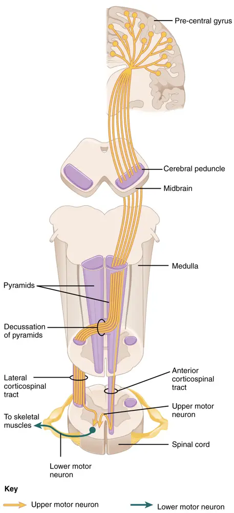
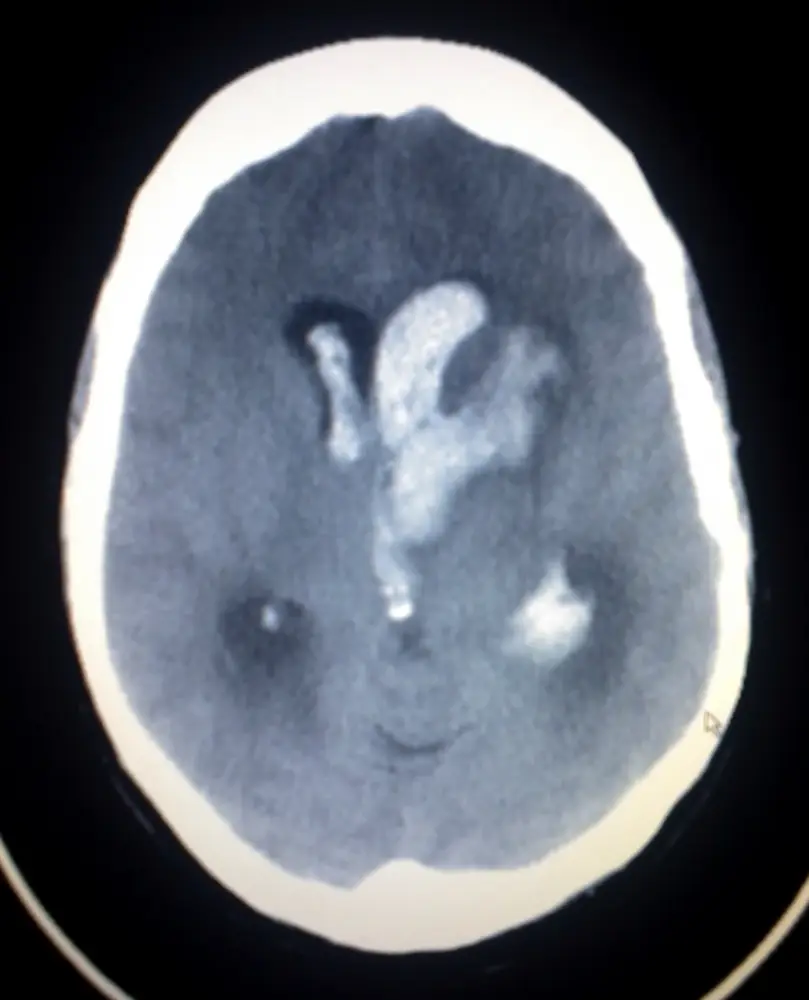

Parésie, paralysie
Cette monographie décrit la faiblesse motrice et les maladies qui peuvent la produire chez une personne examinée en Suisse.
1. Définition
L'Académie de médecine définit la paralysie comme une diminution ou une abolition de la motricité.ANM-paralysie
La même définition précise que la paralysie peut être complète ou incomplète, et elle nomme alors la parésie.ANM-paralysie
La parésie y est une suppression incomplète de la contraction d'un ou de plusieurs muscles striés volontaires.ANM-parésie
Cette définition inclut les muscles oculomoteurs et elle précise l'absence de troubles sensitifs dans la parésie ainsi définie.ANM-parésie
Selon la distribution, la paralysie se dit monoplégie, hémiplégie ou paraplégie, lorsque le territoire moteur est nommé.ANM-paralysie
Une paralysie liée au système nerveux périphérique est flasque, avec hypotonie et abolition des réflexes ostéotendineux.ANM-paralysie
Une lésion centrale peut d'abord rendre la paralysie flasque, puis spasmodique après quelques semaines d'évolution.ANM-paralysie
La forme spasmodique associe alors une contracture pyramidale et une exagération des réflexes ostéotendineux.ANM-paralysie
Le Collège des enseignants de neurologie décrit le déficit neurologique comme la perte d'une fonction nerveuse.CEN-91
Cette perte vient d'une dysfonction temporaire, et le déficit est alors transitoire, ou d'une lésion, et il est durable.CEN-91
Le collège distingue ce déficit d'une souffrance globale du cerveau, comme le coma ou la confusion.CEN-91
2. Épidémiologie (Suisse, puis Europe)
À Genève, en 2018 et 2019, l'étude de population a retenu 1 186 premiers accidents vasculaires cérébraux.Genève-2025
L'âge médian était de 75,8 ans, avec un intervalle interquartile de 63,4 à 84,5 ans.Genève-2025
Parmi ces personnes, 571 étaient des femmes, soit 48,1 % de la série genevoise.Genève-2025
L'incidence annuelle du premier accident, standardisée sur la population européenne, était de 127,0 pour 100 000.Genève-2025
L'intervalle de confiance à 95 % de cette incidence allait de 119,8 à 134,3 pour 100 000.Genève-2025
L'accident ischémique représentait 107,3 pour 100 000, avec un intervalle de 100,7 à 114,0.Genève-2025
L'hémorragie intraparenchymateuse représentait 13,2 pour 100 000, avec un intervalle de 10,9 à 15,5.Genève-2025
L'hémorragie sous-arachnoïdienne représentait 6,0 pour 100 000, et la forme anévrismale 3,1 pour 100 000.Genève-2025
La létalité à 30 jours atteignait 32,5 % pour l'hémorragie intraparenchymateuse dans cette série.Genève-2025
Elle atteignait 10,8 % pour l'accident ischémique et 17,2 % pour l'hémorragie sous-arachnoïdienne.Genève-2025
L'imagerie par résonance magnétique a été faite chez 90,9 % des accidents ischémiques genevois.Genève-2025
Selon la classification internationale des maladies, onzième révision, l'incidence ischémique passait de 90,4 à 107,3 pour 100 000.Genève-2025
Cette révision augmentait de 18,3 % le nombre d'accidents ischémiques, en comptant les déficits brefs avec lésion visible.Genève-2025
Pour la Suisse, l'Observatoire de la santé compte en moyenne 21 729 hospitalisations ou décès par accident vasculaire cérébral et par an.Obsan
Ce total décrit les années 2019 à 2023, de l'hémorragie méningée jusqu'à l'accident non précisé.Obsan
Le taux brut suisse est de 249,5 pour 100 000, et le taux standardisé de 249,4 pour 100 000.Obsan
L'intervalle de confiance du taux standardisé va de 247,9 à 251,0 pour 100 000 habitants.Obsan
La létalité nationale de cet indicateur est de 12,2 %, avec un intervalle de 12,0 à 12,4 %.Obsan
Le nombre moyen de décès liés à cet indicateur est de 2 651 par an sur la même période.Obsan
Chez les femmes, le taux standardisé est de 200,4 pour 100 000 et la létalité de 15,6 %.Obsan
Ces totaux nationaux mêlent ischémie, hémorragie cérébrale et hémorragie méningée, sans classer les sous-types.Obsan
Une revue de 2024, menée depuis Zurich et le Balgrist, indique l'incidence hospitalière ou chirurgicale de la hernie lombaire avec radiculopathie.ESJ-2024
Dans les populations générales de cette revue, cette incidence annuelle va de 0,2 à 2,5 pour 1 000 personnes.ESJ-2024
La revue précise que la plupart de ces hernies ne sont pas traitées à l'hôpital, et que la définition clinique est plus large.ESJ-2024
Une étude à définition clinique citée dans la revue indique 13,4 pour 1 000 personnes et par an.ESJ-2024
Ces définitions comptent la douleur radiculaire avec ou sans déficit moteur, ce qui surestime la seule parésie.ESJ-2024
En Norvège du Sud-Est, Zaikova et ses collègues ont mesuré 8,1 compressions médullaires épidurales métastatiques pour 100 000 habitants et par an.JBO-2022
La même population comptait 26,0 métastases rachidiennes pour 100 000 habitants et par an, sur 2007 et 2008.JBO-2022
En Allemagne, entre 2011 et 2020, l'incidence ajustée de la myasthénie était de 2,8 pour 100 000 personnes-années.ALL-2023
L'intervalle de confiance de cette incidence allait de 2,43 à 3,22 pour 100 000 personnes-années.ALL-2023
La prévalence allemande est passée de 15,7 à 28,2 pour 100 000 entre 2011 et 2020.ALL-2023
Une intervention de crise a été nécessaire chez 2 à 5 % des personnes myasthéniques de cette cohorte.ALL-2023
Une revue ciblée de vingt-quatre études européennes indique l'incidence adulte du syndrome de Guillain-Barré entre 1,0 et 3,0 pour 100 000.VIH-2021
Chez les enfants de 0 à 9 ans, la même revue indique l'incidence entre 0,5 et 1,1 pour 100 000.VIH-2021
Dans cette revue, l'Italie atteint 3,0 pour 100 000 et la Norvège 2,7 pour 100 000 personnes-années.VIH-2021
Une revue de 2023 indique l'incidence des myosites inflammatoires idiopathiques entre 0,2 et 2 pour 100 000 personnes-années.NRR-2023
La prévalence correspondante va de 2 à 25 pour 100 000 personnes, selon les critères et les régions.NRR-2023
Deux populations européennes communautaires ont donné 0,48 et 0,34 syndromes de la queue de cheval pour 100 000 et par an.JNS-2020
Une population adulte finlandaise a donné 0,6 pour 100 000 adultes et par an, sur trois années.JNS-2020
Hurme a compté 11 cas opérés en cinq ans sur un bassin de 455 000 habitants en Finlande.JNS-2020
Podnar a publié une incidence de 0,34 pour 100 000 et par an en Slovénie, sur un bassin de 1 989 198 habitants.JNS-2020
Le décompte brut de 67 cas ne reproduit pas ce taux sur huit ans, et il mélange queue de cheval et cône médullaire.JNS-2020
Aucune série suisse lue ne range ensemble ces dix maladies, parce que les dénominateurs et les définitions diffèrent.
La fréquence suisse de l'hémiparésie hypoglycémique reste sans taux comparable : Référence non vérifiée pour cette fiche.
Une revue clinique britannique attribue 20 % des imitations d'accident vasculaire aux crises épileptiques.ClinMed-2017
Dans une série sélectionnée de 513 personnes en vidéo-électroencéphalogramme, une parésie post-critique est survenue chez 13,4 %.ClinMed-2017
Cette parésie durait jusqu'à 22 minutes dans cette série de monitorage, qui ne représente pas la population générale.ClinMed-2017
La même revue indique que 1,8 à 2,9 % des accidents ischémiques s'accompagnent d'une crise au début ou dans les 24 heures.ClinMed-2017
Le taux de population du déficit post-critique n'est pas établi par ces séries : Référence non vérifiée pour cette fiche.
Pour l'hémorragie intraparenchymateuse, la létalité à 30 jours a un intervalle de 19,7 à 38,8 %.Genève-2025
Pour l'ischémie, la létalité à 30 jours a un intervalle de 8,4 à 12,4 % dans la même étude.Genève-2025
Pour l'hémorragie sous-arachnoïdienne, la létalité à 30 jours a un intervalle de 6,6 à 27,9 %.Genève-2025
L'incidence ischémique selon la dixième classification était de 90,4 pour 100 000, intervalle 84,3 à 96,5.Genève-2025
L'intervalle de l'hémorragie sous-arachnoïdienne va de 4,4 à 7,5 pour 100 000, et celui de la forme anévrismale de 2,0 à 4,2.Genève-2025
Chez les femmes, le nombre annuel moyen de cas de l'indicateur national est de 10 047.Obsan
L'intervalle de leur létalité va de 15,2 à 15,9 %, et le nombre moyen de décès est de 1 562.Obsan
Leur taux brut est de 229,1 pour 100 000, tandis que le taux standardisé reste de 200,4.Obsan
L'intervalle du taux standardisé féminin va de 198,6 à 202,2 pour 100 000 habitantes.Obsan
Les données allemandes portent sur 6,1 millions de personnes assurées, suivies de 2011 à 2020.ALL-2023
L'incidence ajustée est de 3,1 pour 100 000 chez les hommes, intervalle 2,61 à 3,64.ALL-2023
Elle est de 2,5 pour 100 000 chez les femmes, avec un intervalle de 2 à 2,92.ALL-2023
Après 80 ans, l'incidence moyenne atteint 9,3 pour 100 000, contre 0,8 entre 18 et 39 ans.ALL-2023
Le taux d'hospitalisation des personnes myasthéniques est tombé à 8,3 % en 2020, année de pandémie.ALL-2023
La revue européenne indique que l'incidence du syndrome de Guillain-Barré augmente avec l'âge et reste plus haute chez les hommes.VIH-2021
Reito a séparé, chez l'adulte, 0,30 pour 100 000 avec rétention et 0,30 pour 100 000 de forme incomplète.JNS-2020
Pour un sous-ensemble de définitions hospitalières ou chirurgicales en population générale, la revue indique aussi une fourchette plus étroite, de 0,2 à 1,3 pour 1 000.ESJ-2024
Les chiffres lus comparent des ordres de grandeur qui ne viennent pas d'une seule cohorte.
Chiffres lus
| Indicateur | Valeur lue | Population | Source |
|---|---|---|---|
| Premier accident, tout type | 127,0 pour 100 000 | Genève, standard européen, 2018-2019 | Genève-2025 |
| Accident ischémique | 107,3 pour 100 000 | Genève, onzième classification | Genève-2025 |
| Hémorragie intraparenchymateuse | 13,2 pour 100 000 | Genève, premier événement | Genève-2025 |
| Létalité à 30 jours, hémorragie | 32,5 % | Genève | Genève-2025 |
| Létalité à 30 jours, ischémie | 10,8 % | Genève | Genève-2025 |
| Hospitalisations ou décès | 21 729 par an | Suisse, indicateur national, 2019-2023 | Observatoire |
| Létalité de cet indicateur | 12,2 % | Suisse, même période | Obsan |
| Hernie lombaire, définitions hospitalières ou chirurgicales en population générale | 0,2 à 2,5 pour 1 000 | Revue de 2024, populations générales | Revue du rachis |
| Compression médullaire métastatique | 8,1 pour 100 000 | Norvège du Sud-Est, 2007-2008 | Revue osseuse |
| Incidence de la myasthénie | 2,8 pour 100 000 | Allemagne, 2011-2020, ajustée | Cohorte allemande |
| Syndrome de Guillain-Barré, adulte | 1,0 à 3,0 pour 100 000 | Vingt-quatre études européennes | Revue ciblée |
| Myosite inflammatoire | 0,2 à 2 pour 100 000 | Revue internationale, 2023 | Revue des myosites |
| Queue de cheval | 0,34 à 0,6 pour 100 000 | Finlande et Slovénie | Revue européenne |
Ces lignes ne forment pas une série unique, et le rang proposé compare des ordres de grandeur hétérogènes.
3. Physiopathologie
La force volontaire suit un motoneurone supérieur, puis un motoneurone inférieur, puis le muscle strié.ANM-paralysie
Lorsque la lésion est périphérique, la paralysie est flasque, le tonus baisse et les réflexes ostéotendineux disparaissent.ANM-paralysie
Lorsque la lésion est centrale, la paralysie peut rester flasque au début, puis devenir spasmodique en quelques semaines.ANM-paralysie
Le collège place la lésion dans l'encéphale, le tronc cérébral ou la moelle lorsque les signes sont centraux.CEN-91
Il place la lésion sur une racine, un plexus ou un tronc lorsque le territoire est périphérique.CEN-91
Il place la lésion sur la jonction neuromusculaire ou le muscle lorsque le déficit est moteur pur et plutôt proximal.CEN-91
Un réflexe diminué n'est pas spécifique d'une lésion périphérique, la phase initiale centrale étant elle aussi flasque.CEN-91
Un niveau sensitif thoracique ou abdominal oriente vers la moelle, alors qu'un hémicorps oriente vers l'encéphale.CEN-91
L'aphasie, l'hémianopsie ou un trouble gnosique ajoutent un argument cortical à l'hémiparésie.CEN-91
Une atteinte des nerfs crâniens associée aux voies longues oriente vers le tronc cérébral.CEN-91
Le mode d'installation unit le mécanisme au temps : secondes pour le vaisseau, la migraine, l'épilepsie ou le traumatisme.CEN-91
Un déficit d'emblée maximal oriente d'abord vers un mécanisme vasculaire, selon le collège.CEN-91
Une installation en dizaines de secondes peut être une marche épileptique, sans exclure le vaisseau.CEN-91
Une installation en dizaines de minutes peut être une marche migraineuse, et le vaisseau reste possible.CEN-91
Quelques heures ou quelques jours orientent vers l'inflammation, l'infection ou un toxique, et parfois une thrombose veineuse cérébrale.CEN-91
Quelques semaines orientent vers un processus expansif rapide, une infection ou un trouble métabolique.CEN-91
Une tumeur silencieuse peut commencer brutalement par une crise, et le profil évolutif s'en trouve modifié.CEN-91
Le flacon à 40 % contient 400 g de glucose pour 1 000 ml, soit une osmolarité théorique de 2 220 mOsm par litre.29550
Son pH va de 3,5 à 5,5, et sa valeur énergétique lue est de 6 700 kJ ou 1 600 kcal par litre.29550
L'information rappelle qu'une glycémie à jeun adulte se situe entre 3,9 et 5,6 mmol par litre.29550
La même ligne donne aussi 70 à 100 mg par décilitre, ce qui est la même fourchette dans une autre unité.29550
Lorsque le déficit a déjà disparu, le récit du patient ou des témoins devient décisif à l'examen.CEN-91
Tant que la faiblesse persiste, le diagnostic syndromique se fait au lit, parce que les signes sont encore là.CEN-91
Une amélioration spontanée peut suivre un mécanisme vasculaire ou une poussée inflammatoire, comme dans la sclérose en plaques.CEN-91
Une aggravation en tache d'huile doit faire chercher un processus expansif, tumeur, abcès ou hématome.CEN-91
Plusieurs mécanismes peuvent se combiner, et une tumeur silencieuse peut commencer par une crise.CEN-91
La voie motrice relie le cortex, le croisement bulbaire et le muscle au signe trouvé au lit.
Voie motrice volontaire
Le schéma d'anatomie montre le trajet cortical, le croisement bulbaire et le relais vers le muscle.ANM-paralysie
Le lecteur voit d'abord le cliché brut, puis les repères numérotés sur la copie annotée.
La copie annotée garde la même licence que le dessin original, puisqu'elle en est une œuvre dérivée.
Le dessin en couleur suit la voie motrice depuis le cortex jusqu'au muscle strié.

Ce cliché brut montre le cortex, le tronc et la moelle avant tout repère ajouté.
La copie annotée porte cinq repères, sans modifier le dessin d'origine.
- Le gyrus précentral, en haut du dessin, est le cortex d'où part le motoneurone supérieur.
- Les fibres jaunes traversent ensuite le pédoncule cérébral, dans le mésencéphale.
- Le croisement des pyramides, au bulbe, fait passer la plupart des fibres de l'autre côté.
- Le faisceau corticospinal latéral atteint alors la moelle, du côté opposé au cortex d'origine.
- La flèche verte marque le motoneurone inférieur, qui rejoint le muscle strié.
Un piège consiste à croire que toutes les fibres croisent, alors que le schéma garde aussi un faisceau antérieur.
Ce dessin décide d'opposer une lésion au-dessus du motoneurone inférieur à une lésion de la corne, du nerf ou du muscle.

4. Démarche diagnostique
Tout déficit brutal doit faire suspecter un accident vasculaire et impose une prise en charge immédiate.CEN-91
La glycémie capillaire doit être contrôlée devant tout déficit neurologique, afin de corriger une hypoglycémie.CEN-91
L'hémorragie intraparenchymateuse a la létalité à 30 jours la plus haute lue, soit 32,5 % à Genève.Genève-2025
L'accident ischémique vient ensuite pour la létalité à 30 jours, à 10,8 % dans la même série.Genève-2025
Après la glycémie et l'imagerie cérébrale, un syndrome médullaire aigu impose une imagerie médullaire en urgence.CEN-91
Un syndrome de la queue de cheval aigu impose la même urgence d'imagerie, puis un avis neurochirurgical si une compression est confirmée.CEN-91
Le syndrome de Guillain-Barré se discute devant une atteinte sensitive et motrice, ascendante, avec abolition des réflexes.CEN-91
La crise myasthénique se discute devant une faiblesse fluctuante qui touche la déglutition ou la respiration.CEN-91
La hernie discale avec radiculopathie se discute lorsque la douleur et le déficit suivent une racine.CEN-91
La myosite se discute lorsque le déficit est proximal, moteur pur, avec des myalgies ou une élévation des enzymes musculaires.CEN-91
Le déficit post-critique se discute après une crise constatée, et il ne dispense pas de chercher un accident vasculaire inaugural.CEN-91
Le rang de la hernie lombaire repose sur une incidence de radiculopathie, qui inclut des douleurs sans parésie.ESJ-2024
Les rangs de l'hypoglycémie et du déficit post-critique ne viennent pas d'une incidence de population.
Les trois grandes causes de déficit transitoire neurologique sont l'accident ischémique transitoire, la crise et l'aura migraineuse.CEN-91
L'accident ischémique transitoire donne plutôt des symptômes négatifs, d'emblée maximaux, chez une personne de plus de 50 ans à risque vasculaire.CEN-91
La crise donne plutôt des symptômes positifs, avec parfois clonies, rupture de contact ou amnésie de l'épisode.CEN-91
L'aura migraineuse s'étend en dizaines de minutes, souvent chez une personne de moins de 50 ans qui a déjà des migraines.CEN-91
Cette aura est en général limitée à moins d'une heure, avec des phénomènes visuels ou sensitifs positifs.CEN-91
L'hypoglycémie peut donner un signe focal, souvent chez une personne diabétique traitée, et la glycémie doit être mesurée.CEN-91
Un hématome sous-dural, une tumeur ou une malformation peuvent rendre un déficit transitoire, le plus souvent par une crise ajoutée.CEN-91
Une compression posturale d'un tronc, comme la paralysie radiale du samedi soir, peut aussi être transitoire.CEN-91
Si cette compression récidive, il faut chercher une duplication du gène de la protéine de la myéline périphérique.CEN-91
Le tableau comparatif tient les dix maladies, leur signe, leur examen, leur mécanisme et leur conduite.
Dix maladies comparées
| Maladie | Signe qui oriente | Examen qui tranche | Mécanisme | Conduite immédiate | Rang E |
|---|---|---|---|---|---|
| Accident vasculaire cérébral ischémique 🚩 | Déficit brutal maximal | Imagerie cérébrale et des vaisseaux | Ischémie focale | Filière urgente, heure de début | Létalité suivante |
| Hernie discale lombaire avec radiculopathie | Douleur et déficit d'une racine | Examen radiculaire, imagerie si grave | Compression radiculaire | Exclure d'abord la queue de cheval | — |
| Hémorragie intraparenchymateuse 🚩 | Déficit brutal, céphalée possible | Scanner sans injection | Sang dans le parenchyme | Imagerie avant tout médicament du caillot | Létalité la plus haute |
| Compression médullaire épidurale métastatique 🚩 | Niveau sensitif, paraparésie | Imagerie médullaire urgente | Compression de la moelle | Avis neurochirurgical | — |
| Myasthénie auto-immune 🚩 | Faiblesse fluctuante | Électromyogramme et anticorps | Jonction neuromusculaire | Réanimation si la respiration cède | — |
| Syndrome de Guillain-Barré 🚩 | Déficit ascendant, aréflexie | Liquide et examen électrique | Polyradiculonévrite | Surveiller toux, voix et tension | — |
| Myosite inflammatoire idiopathique | Déficit proximal douloureux | Enzymes musculaires | Muscle inflammatoire | Chercher une complication respiratoire | — |
| Syndrome de la queue de cheval 🚩 | Racines lombosacrées, sphincters | Imagerie lombaire urgente | Compression des racines | Avis neurochirurgical | — |
| Hypoglycémie 🚩 | Contexte de diabète traité | Glycémie capillaire | Manque de glucose neuronal | Corriger selon le produit autorisé | — |
| Déficit post-critique épileptique | Après une crise vue | Imagerie au premier épisode | Épuisement cortical post-critique | Ne pas conclure sans avoir exclu le vaisseau | — |
Le tiret dans la colonne du rang E indique qu'une létalité comparative chiffrée n'a pas été lue pour cette ligne.
5. Anamnèse ciblée et drapeaux rouges
L'heure de début doit être recherchée dès qu'un accident vasculaire en cours de constitution est suspecté.CEN-91
Un début en secondes, d'emblée maximal, oriente d'abord vers un mécanisme vasculaire.CEN-91
Un début en dizaines de secondes, de proche en proche, peut correspondre à une marche épileptique.CEN-91
Un début en dizaines de minutes, avec extension progressive, peut correspondre à une marche migraineuse.CEN-91
Le vaisseau reste possible dans ces deux marches, et il ne faut pas le conclure sur le seul récit.CEN-91
Des heures ou des jours orientent vers l'inflammation, l'infection, un toxique, ou certaines thromboses.CEN-91
Des semaines orientent vers une tumeur maligne, un abcès, un hématome sous-dural, une infection ou un trouble métabolique.CEN-91
Un déficit déjà résolu à l'arrivée n'est pas vu par le médecin, et les témoins doivent alors être interrogés.CEN-91
Plus la personne est âgée, plus les causes vasculaires deviennent fréquentes, tout en restant possibles chez le sujet jeune.CEN-91
La sclérose en plaques commence le plus souvent chez le sujet jeune, sans que l'âge exclue un accident vasculaire.CEN-91
Le collège rappelle qu'une dissection ou une malformation peuvent donner un accident vasculaire chez une personne jeune.CEN-91
Les antécédents utiles sont les risques vasculaires, l'immunodépression, un séjour lointain, les toxiques et les traitements.CEN-91
La fièvre, un traumatisme, une céphalée, un syndrome méningé, une douleur neurogène ou des myalgies changent la piste.CEN-91
Un diabète traité rend l'hypoglycémie plus plausible, et la glycémie capillaire reste obligatoire dans tous les cas.CEN-91
Une douleur au premier plan, avec impotence, fait chercher une cause ostéoarticulaire ou vasculaire périphérique.CEN-91
Des crises stéréotypées connues rendent le déficit post-critique plus plausible, sans écarter un accident ischémique inaugural.ClinMed-2017
Le terrain vasculaire, un souffle ou une cardiopathie renforcent la piste d'un accident ischémique transitoire.CEN-91
Des accès stéréotypés déjà connus renforcent la piste d'une crise, sans dispenser de l'imagerie au premier épisode.CEN-91
Une hémicrânie avec gêne à la lumière, gêne au bruit et signes digestifs renforce la piste d'une aura migraineuse.CEN-91
La fièvre, les constantes et un purpura cutané doivent être cherchés, parce qu'ils ouvrent une piste infectieuse ou systémique.CEN-91
Un traumatisme ou une ecchymose du cuir chevelu doivent faire demander un scanner sans attendre un autre signe.CEN-91
Les drapeaux nomment le geste qui doit précéder la fin de l'entretien clinique.
Drapeaux qui imposent un geste
Un trouble de la vigilance, de la déglutition, de la respiration ou de l'hémodynamique peut menacer le pronostic vital.CEN-91
Un déficit fébrile doit faire évoquer une infection du système nerveux avant tout délai d'examen.CEN-91
Un syndrome médullaire ou de la queue de cheval d'installation récente doit conduire à l'imagerie le jour même.CEN-91
Des fausses routes, une toux inefficace, une dyspnée ou un encombrement annoncent une défaillance respiratoire neuromusculaire.CEN-91
6. Examen physique ciblé, région par région
L'examen doit commencer par la vigilance, la respiration et la déglutition, avant le détail de la force.CEN-91
Il précise ensuite si le déficit est moteur, sensitif, cérébelleux, visuel ou cognitif.CEN-91
L'oculomotricité, la face, le voile et la langue complètent les pupilles lorsque le tronc est en cause.CEN-91
Le clonus de cheville et la diffusion des réflexes soutiennent le faisceau pyramidal, avec le signe de Babinski.CEN-91
Des fasciculations ou une amyotrophie, dans un territoire de racine ou de tronc, soutiennent une lésion périphérique.CEN-91
L'absence de trouble sensitif et de trouble vésical, avec un déficit proximal, soutient la jonction ou le muscle.CEN-91
Après quelques semaines, une paralysie centrale peut devenir spasmodique, avec contracture et réflexes exagérés.ANM-paralysie
La vigilance s'observe avant la force, parce qu'elle change la suite de l'examen.
Le langage se teste tôt, afin de ne pas attribuer une aphasie à une simple faiblesse.
Les nerfs crâniens se cotent ensuite, pour situer une lésion du tronc ou de l'hémisphère.
Les membres supérieurs se comparent des deux côtés, de l'épaule jusqu'aux doigts.
Le tronc se sensibilise à la recherche d'un niveau qui signerait la moelle.
Les membres inférieurs se testent après le tronc, en proximal puis en distal.
La marche ne se demande que si la station debout ne fait pas chuter.
La respiration se réévalue dès qu'une faiblesse ascendante ou fluctuante est suspectée.
Les réflexes se cherchent après la force, sans conclure trop vite à une origine périphérique.
Le tonus se palpe à la fin de la région, pour distinguer flasque et spasmodique.
La douleur trompeuse se reconnaît quand l'impotence cède dès que la douleur est calmée.
Nerfs crâniens
Les nerfs crâniens se testent avec les pupilles, la motilité oculaire, la face, le voile et la langue.CEN-91
Leur atteinte, jointe à un signe des voies longues, oriente vers le tronc cérébral plutôt que vers l'hémisphère.CEN-91
Les muscles oculomoteurs entrent dans la définition académique de la parésie, et leur force doit être cotée.ANM-parésie
Réflexes
Les réflexes ostéotendineux vifs et un signe de Babinski soutiennent une lésion du faisceau pyramidal.ANM-paralysie
Des réflexes abolis conviennent à une lésion périphérique, mais aussi à la phase flasque initiale d'une lésion centrale.CEN-91
Tonus
Le tonus baisse dans la paralysie flasque, puis il peut augmenter lorsque la contracture pyramidale s'installe.ANM-paralysie
7. Approche syndromique
Le syndrome pyramidal associe un déficit, des réflexes vifs, un signe de Babinski et, plus tard, une spasticité.CEN-91
Une atteinte neurogène périphérique associe un territoire radiculaire ou tronculaire, une aréflexie et parfois une amyotrophie.CEN-91
Une atteinte de la jonction neuromusculaire est motrice pure, souvent fluctuante, sans trouble sensitif ni niveau spinal.CEN-91
Une atteinte myogène est proximale et motrice pure, tandis que les réflexes tendineux et plantaires restent longtemps présents.CEN-91
Une atteinte médullaire associe un niveau sensitif, un trouble sphinctérien possible et un déficit sous la lésion.CEN-91
Le syndrome de la queue de cheval associe une atteinte des racines lombosacrées, souvent douloureuse, avec un risque sphinctérien.CEN-91
Le syndrome confusionnel ou le coma ne sont pas une parésie, et le collège les renvoie à d'autres chapitres.CEN-91
L'atteinte encéphalique permanente comprend l'infarctus, l'hémorragie, la thrombose veineuse et l'hémorragie méningée.CEN-91
Elle comprend aussi le traumatisme compliqué, la tumeur maligne, l'infection, l'hématome sous-dural et certaines inflammations.CEN-91
L'atteinte médullaire permanente comprend la compression, l'accident vasculaire médullaire, la myélite et la carence.CEN-91
L'atteinte périphérique permanente comprend la queue de cheval, la sciatique paralysante, le Guillain-Barré et les plexopathies.CEN-91
Elle comprend aussi la neuropathie d'un nerf ou de plusieurs nerfs, compressive, inflammatoire ou ischémique.CEN-91
L'atteinte de la jonction ou du muscle comprend la myasthénie, la myosite, la myopathie toxique et la rhabdomyolyse.CEN-91
Parfois, la faiblesse récente peut ouvrir une maladie lente, comme une tumeur bénigne ou une sclérose latérale amyotrophique.CEN-91
Les syndromes séparent le neurone central, le nerf, la jonction, le muscle, la moelle et les racines.
8. Diagnostic positif et critères
Le diagnostic de parésie est positif lorsque la contraction volontaire est diminuée sans être abolie, selon l'Académie.ANM-parésie
Le diagnostic de paralysie est positif lorsque la motricité est diminuée ou abolie, complète ou incomplète.ANM-paralysie
Ce constat ne suffit pas : le collège exige un diagnostic topographique, un mode d'installation et un contexte.CEN-91
Un déficit non anatomique, variable, avec des discordances, peut relever d'un trouble fonctionnel neurologique.CEN-91
Une impotence douloureuse ostéoarticulaire ou un membre ischémique ne sont pas des paralysies neurologiques.CEN-91
L'examen normal après un épisode résolu ne nie pas le déficit : il le classe comme transitoire et il exige l'anamnèse.CEN-91
La cotation chiffrée détaillée de l'échelle britannique de force musculaire n'est pas reprise : Référence non vérifiée pour cette fiche.
Le diagnostic positif du symptôme ne nomme pas encore la maladie : il constate seulement la perte de force.CEN-91
Il est insuffisant si le territoire, le temps et le contexte n'ont pas été écrits dans le dossier.CEN-91
La définition académique de la parésie exige des muscles striés volontaires, et elle exclut les troubles sensitifs de cette définition.ANM-parésie
En pratique, une même lésion peut ajouter un trouble sensitif, et ce trouble sert alors à localiser, non à renommer la parésie.CEN-91
9. Examens complémentaires
9.a Examen de référence selon le lieu suspecté
Si les signes sont encéphaliques, l'imagerie par résonance magnétique est préférée, et le scanner la remplace lorsqu'elle est impossible.CEN-91
À Genève, 90,9 % des accidents ischémiques ont eu une imagerie par résonance, ce qui a compté des lésions brèves.Genève-2025
En cas d'infarctus, une angiographie par résonance ou un angioscanner cervicoencéphalique doivent chercher une occlusion.CEN-91
Le scanner sans injection montre l'hémorragie fraîche en hyperdensité, et il sépare ainsi le sang de l'ischémie précoce souvent encore discrète.CEN-91
Devant un syndrome médullaire ou de la queue de cheval, l'imagerie médullaire doit être faite en urgence.CEN-91
Un abcès se discute devant une prise de contraste annulaire, même si la fièvre manque dans près de 50 % des cas.CEN-91
9.b Examens de première intention
L'examen de première intention dépend du lieu suspecté, et aucun examen unique ne couvre toutes les parésies.CEN-91
La glycémie capillaire vient avant l'imagerie, devant tout déficit, afin de corriger une hypoglycémie.CEN-91
Un traumatisme avec signe focal impose un scanner cérébral sans injection, à la recherche d'un hématome extra ou sous-dural.CEN-91
Toute suspicion d'infection encéphalique doit avoir une imagerie en urgence, avant la ponction lombaire s'il existe un déficit focal.CEN-91
La fièvre manque dans près de 50 % des abcès cérébraux, et l'imagerie ne doit pas attendre la température.CEN-91
Si l'installation est progressive et sans signe de gravité, le collège place les examens dans un délai rapide, sous 24 heures.CEN-91
Les déficits progressifs sans trouble de vigilance doivent être explorés dans un délai rapide, que le collège situe sous 24 heures.CEN-91
9.c Alternatives lorsque l'examen préféré est impossible
Si l'imagerie par résonance est impossible ou contre-indiquée, le scanner cérébral sans injection, parfois avec, doit la remplacer.CEN-91
9.d Examens de deuxième intention
L'examen électrique du nerf est demandé lorsque la piste est périphérique, jonctionnelle ou musculaire.CEN-91
L'électroencéphalogramme vient lorsqu'une crise est suspectée, y compris devant un déficit qui pourrait être post-critique.CEN-91
La ponction lombaire vient après l'imagerie lorsqu'une polyradiculonévrite, une infection ou une inflammation sont suspectées.CEN-91
Le liquide est étudié pour une hausse des protéines sans cellule dans le syndrome de Guillain-Barré.CEN-91
Dans le syndrome de Guillain-Barré, le liquide montre des protéines hautes sans cellule, et l'examen électrique confirme l'atteinte.CEN-91
Dans la myasthénie révélée par une crise, l'électromyogramme cherche un bloc, et les anticorps du récepteur sont dosés.CEN-91
Les enzymes musculaires, les toxiques et l'électrocardiogramme complètent selon la piste, sans remplacer l'examen clinique.CEN-91
L'électrocardiogramme, les enzymes musculaires et la recherche de toxiques viennent selon la piste, après la glycémie.CEN-91
Un liquide trouble de méningite purulente doit faire commencer sans délai une antibiothérapie intraveineuse probabiliste à forte dose.CEN-91
Le chapitre ne précise ni le nom ni la dose de cet antibiotique, et cette monographie ne les invente pas.CEN-91
Le scanner montre le sang frais qui distingue l'hémorragie de l'ischémie encore discrète.
Scanner d'une hémorragie
Le cliché retenu est une photographie d'un scanner, sans nom de personne et sans numéro d'identité visible.
Le scanner sans injection d'un infarctus constitué peut montrer une hypodensité, distincte du sang blanc de l'hémorragie.CEN-91
L'imagerie de diffusion d'un infarctus aigu montre un hypersignal, que ce cliché de scanner ne peut pas reproduire.CEN-91
Ce scanner sans injection montre une hémorragie intraparenchymateuse ouverte dans les ventricules.

Le cliché brut est une photographie d'écran, et le signe blanc central s'y cherche avant les cercles.
La copie annotée montre le sang ventriculaire, une corne déclive, le parenchyme gris et l'os.
- L'hyperdensité blanche du centre de l'image occupe le système ventriculaire et correspond à du sang frais.
- Une hyperdensité plus petite est située vers le bas et à gauche de l'image, dans une corne.
- Le parenchyme du côté droit de l'image reste gris, sans plage blanche de même intensité.
- Le liseré blanc périphérique est la voûte crânienne, et non une hémorragie.
Un piège est le curseur visible en bord d'image, qui n'appartient pas à l'anatomie.
Un autre piège est de prendre l'os blanc pour du sang, alors que le sang pathologique est intraparenchymateux ou ventriculaire.
Cette image décide d'écarter la thrombolyse d'un accident ischémique tant que le sang frais n'a pas été exclu.
.jpg){kind=link}
10. Arbre décisionnel
L'arbre commence par les gestes qui évitent un décès immédiat, puis il localise, puis il nomme la maladie.CEN-91
On mesure d'abord la glycémie capillaire et les constantes, en même temps que l'on protège la respiration.CEN-91
On exclut ensuite l'hémorragie puis l'ischémie par l'imagerie, parce que leurs létalités à 30 jours sont connues.Genève-2025
Si le tableau est médullaire ou de la queue de cheval, l'imagerie rachidienne passe avant les examens lents.CEN-91
Si le déficit est ascendant et sans réflexe, le transfert en réanimation se décide sur la toux, la voix et la tension.CEN-91
Si la faiblesse fluctue et touche la déglutition, la crise myasthénique se traite en réanimation.CEN-91
Si une crise a été vue et que l'imagerie n'a pas montré d'accident, le déficit post-critique reste une hypothèse.CEN-91
Si la douleur radiculaire domine avec un déficit de racine, la hernie discale compressive entre dans la liste.CEN-91
Si le déficit est proximal et douloureux, les enzymes musculaires orientent vers une myosite ou une rhabdomyolyse.CEN-91
Si le scanner montre du sang, la filière de l'ischémie aiguë ne doit pas recevoir un traitement du caillot.CEN-91
Si le scanner est encore peu parlant et que le déficit est brutal, l'imagerie de diffusion doit être discutée sans retard.CEN-91
Si la moelle est comprimée, l'avis neurochirurgical doit être pris le jour même, avant les examens de confort.CEN-91
Si la queue de cheval est confirmée, la même urgence chirurgicale s'applique, parce que le retard laisse des séquelles sphinctériennes.CEN-91
L'arbre ordonne la glycémie et les deux premiers rangs de létalité avant les causes plus lentes.
Arbre de décision
- La première mesure doit être la glycémie capillaire, pendant que la respiration reste protégée.
- Une glycémie basse doit être corrigée avec le glucose dont l'information professionnelle a été lue.
- Un déficit brutal, fébrile ou traumatique doit conduire à l'imagerie, pour exclure l'hémorragie puis l'ischémie.
- Un niveau sensitif ou des racines lombosacrées doivent conduire à l'imagerie médullaire ou lombaire en urgence.
- Un déficit ascendant avec chute des réflexes doit faire surveiller la toux et préparer la réanimation.
- Une faiblesse fluctuante qui gêne la déglutition doit être traitée comme une crise myasthénique en réanimation.
- Après exclusion du sang et de l'ischémie, la crise, la racine, le muscle ou la jonction peuvent être discutés.
11. Prise en charge selon les recommandations suisses
Le but immédiat est de protéger la vie, puis de rendre la force lorsque la cause est réversible.CEN-91
Les signes vitaux à traiter sans délai sont la vigilance, la déglutition, la respiration et l'hémodynamique.CEN-91
La glycémie capillaire basse doit être corrigée en urgence, dans un contexte souvent évocateur chez une personne diabétique traitée.CEN-91
Le glucose à 40 % de Braun a pour indication le traitement de l'hypoglycémie, parmi d'autres apports énergétiques.29550
Son information professionnelle réserve ce flacon à 40 % à la perfusion veineuse centrale, sans bolus périphérique écrit.29550
Ces maxima (15 ml/kg/j, soit 6 g/kg/j, et 0,62 ml/kg/h) sont des limites d'apport, pas un schéma de correction urgente.29550
Pour corriger une hypoglycémie à l'urgence, on doit utiliser un glucose autorisé en voie périphérique, typiquement à 10 % ; ce n'est pas ce flacon à 40 %.29550
Chez l'enfant, la même information recommande une solution de glucose à 10 % pour traiter l'hypoglycémie.29550
Elle indique les doses maximales du flacon à 40 %, par exemple 20 ml/kg de 11 à 14 ans, même si cette sécurité reste non évaluée spécifiquement.29550
Aucun ajustement lié au seul âge n'est exigé chez la personne âgée, mais les fonctions rénale et hépatique comptent.29550
Le numéro d'autorisation Swissmedic lu sur l'information est 29550, avec une mise à jour de février 2025.29550
Si une carence en thiamine est plausible, cette carence doit être compensée avant ou avec le glucose, sans retarder la correction d'une hypoglycémie confirmée.29550
Tout déficit brutal ou aigu doit faire réaliser une imagerie cérébrale en urgence lorsque la piste est centrale.CEN-91
L'heure de début des symptômes doit être déterminée lorsqu'un accident vasculaire est en cours de constitution.CEN-91
L'information professionnelle n'indique pas d'administrer des solutions de glucose après un accident ischémique aigu, parce qu'une hyperglycémie peut aggraver la lésion.29550
La suite de la reperfusion dépend de l'imagerie et du tableau, et ses doses médicamenteuses ne sont pas celles de cette monographie.CEN-91
Les milligrammes de thrombolyse, d'antiagrégant ou d'immunoglobulines ne sont pas recopiés : Référence non vérifiée pour cette fiche.
Toute compression médullaire est une urgence thérapeutique et elle nécessite un avis neurochirurgical.CEN-91
Un hématome extradural ou sous-dural avec déficit après traumatisme doit être transféré en neurochirurgie.CEN-91
Le syndrome de Guillain-Barré confirmé par des arguments convaincants se traite par immunoglobulines ou échanges plasmatiques, sans délai inutile.CEN-91
La crise myasthénique se traite en réanimation, avec immunoglobulines ou échanges, et avec une assistance ventilatoire si besoin.CEN-91
Après les gestes vitaux, une rééducation adaptée au déficit moteur, à l'ataxie ou à l'aphasie est nécessaire.CEN-91
Dans la cohorte allemande, le taux moyen d'hospitalisation des personnes myasthéniques était de 11,5 %.ALL-2023
Le transfert en réanimation du syndrome de Guillain-Barré se décide sur la déglutition, la respiration et l'instabilité de la tension ou du rythme.CEN-91
Dans environ 50 % des cas, le syndrome de Guillain-Barré survient après une infection, selon le chapitre lu.CEN-91
Les signes qui imposent la réanimation sont la déglutition, la dyspnée, la toux inefficace et l'instabilité de la tension ou du rythme.CEN-91
Les immunoglobulines ou les échanges doivent commencer vite lorsque les arguments diagnostiques sont déjà convaincants.CEN-91
La crise myasthénique est une urgence vitale, connue ou révélatrice, et elle se traite en réanimation.CEN-91
Le traitement symptomatique comprend l'assistance ventilatoire, puis les immunoglobulines ou les échanges plasmatiques.CEN-91
Après le geste vital, la kinésithérapie du déficit ou de l'ataxie, et l'orthophonie de l'aphasie, doivent être prescrites.CEN-91
Une perfusion trop rapide de ce glucose peut provoquer une hyperglycémie et, parfois, un coma hyperosmolaire.29550
Le produit apporte de l'eau libre et peut provoquer ou aggraver une hyponatrémie, surtout chez l'enfant ou la femme en âge de procréer.29550
Les déficits hydriques et électrolytiques préexistants doivent être compensés avant de commencer la perfusion de glucose.29550
En insuffisance rénale, l'information exige une prudence particulière, sans dose chiffrée propre à cet organe.29550
Pendant l'accouchement, le produit doit être utilisé avec une prudence particulière, surtout si l'ocytocine est associée.29550
Chez une personne dénutrie ou alcoolodépendante, la thiamine est donnée avant ou avec le glucose si cette encéphalopathie est plausible, sans retarder la correction d'une hypoglycémie confirmée.CEN-91
Devant la fièvre, une méningo-encéphalite doit être évoquée, et l'imagerie doit précéder la ponction s'il existe un signe focal.CEN-91
Un hématome extradural ou sous-dural après traumatisme doit être évacué en neurochirurgie, après le scanner sans injection.CEN-91
La conduite dans le temps et la fiche du glucose limitent le médicament dosé à celui dont l'information a été lue.
Conduite dans le temps
À la première minute, on sécurise les voies aériennes, l'oxygène si la saturation chute, et la glycémie capillaire.CEN-91
Si l'hypoglycémie est confirmée, on utilise un glucose autorisé en voie périphérique, et non le flacon à 40 % réservé à la voie centrale.29550
Dans l'heure, l'imagerie cérébrale est obtenue si le déficit est brutal, fébrile, traumatique ou central.CEN-91
Dans les mêmes délais, l'imagerie médullaire est obtenue si un niveau sensitif ou une queue de cheval sont présents.CEN-91
Le jour même, la rééducation est prescrite une fois que le traitement des causes vitales est engagé.CEN-91
Glucose à quarante pour cent
Les contre-indications lues comprennent l'hyperglycémie exigeant plus de 6 unités d'insuline par heure.29550
Elles comprennent aussi le delirium tremens déjà déshydraté, le choc aigu, le collapsus et l'acidose métabolique.29550
L'hyperhydratation, l'œdème pulmonaire et l'insuffisance cardiaque aiguë figurent dans la même liste de contre-indications.29550
Pendant la grossesse, l'administration peut être envisagée si elle est nécessaire sur le plan clinique.29550
Cette possibilité exige une surveillance de l'équilibre hydroélectrolytique et de la glycémie.29550
Pendant l'allaitement, le produit peut être utilisé, et le glucose passe dans le lait.29550
L'information indique qu'aucun effet n'est à craindre pour le nourrisson aux doses thérapeutiques.29550
Si nécessaire sur le plan clinique, l’administration de Glucose 40 % B. Braun peut être envisagée pendant la grossesse, dans la mesure où l’équilibre hydroélectrolytique est surveillé et qu’il se situe dans la plage physiologique. Une surveillance étroite de la glycémie est également nécessaire.
Le glucose et ses métabolites passent dans le lait maternel. Il ne faut cependant craindre aucun effet sur le nourrisson allaité à des doses thérapeutiques de Glucose 40 % B. Braun. Glucose 40 % B. Braun peut être utilisé pendant l’allaitement.
| Grossesse | L'administration peut être envisagée pendant la grossesse si elle est cliniquement nécessaire, avec surveillance de la glycémie. |
|---|---|
| Allaitement | Le produit peut être utilisé pendant l'allaitement, et aucun effet n'est à craindre pour le nourrisson aux doses thérapeutiques. |
| Contre-indications | Hyperglycémie exigeant plus de six unités d'insuline par heure, choc, acidose, œdème pulmonaire et insuffisance cardiaque aiguë. |
| Voie et âge | Perfusion veineuse centrale uniquement. Maxima écrits pour l'adulte et l'adolescent à partir de quinze ans. |
12. Prévention
La prévention importe parce que l'indicateur suisse compte 2 651 décès annuels et une létalité de 12,2 %.Obsan
La prévention de l'hémorragie intraparenchymateuse importe aussi parce que sa létalité à 30 jours atteint 32,5 % à Genève.Genève-2025
Reconnaître un début brutal et activer tout de suite la filière évite de perdre le délai des traitements qui dépendent de l'heure.CEN-91
Contrôler la glycémie devant chaque déficit évite de laisser une cause immédiatement réversible.CEN-91
Les seuils chiffrés de pression artérielle, de lipides ou d'antiagrégant ne sont pas enseignés ici : Référence non vérifiée pour cette fiche.
Après le geste vital, la prévention tertiaire est la rééducation du déficit, de l'ataxie ou de l'aphasie.CEN-91
Les personnes dont l'ischémie dure moins de 24 heures mais laisse une lésion comptent désormais dans l'incidence, en hausse de 18,3 %.Genève-2025
La prévention secondaire des survivants est importante, parce que la létalité nationale de 12,2 % laisse une majorité de personnes vivantes.Obsan
Apprendre à dater le début du déficit est une prévention de la perte de chance, lorsque le traitement dépend de l'heure.CEN-91
13. Points clés
Un déficit brutal est un accident vasculaire jusqu'à preuve du contraire, et la prise en charge est immédiate.CEN-91
La glycémie capillaire se mesure devant tout déficit, avant d'attribuer la faiblesse à une autre maladie.CEN-91
À Genève, l'ischémie est bien plus fréquente que l'hémorragie, mais l'hémorragie tue davantage à 30 jours.Genève-2025
Un niveau médullaire ou une queue de cheval aiguë imposent une imagerie rachidienne et un avis neurochirurgical.CEN-91
Une faiblesse ascendante ou fluctuante qui touche la respiration impose la réanimation, qu'il s'agisse de Guillain-Barré ou de myasthénie.CEN-91
Une hypoglycémie confirmée se corrige en urgence avec un glucose autorisé en voie périphérique, typiquement à 10 %.29550
Devant un épisode déjà résolu, on évoque d'abord un accident ischémique bref, une crise, une aura ou une hypoglycémie.CEN-91
Le flacon à 40 % lu ici reste réservé à une voie veineuse centrale ; ses maxima d'apport ne sont pas un schéma de bolus.29550
14. Pièges et questions fréquentes à l'examen fédéral suisse
Question. Quelle différence l'Académie de médecine pose-t-elle entre parésie et paralysie complète ?ANM-parésie
Réponse. La parésie est une suppression incomplète de la contraction, alors que la paralysie peut aller jusqu'à l'abolition.ANM-parésieANM-paralysie
Raison. Le dictionnaire de 2020 écrit que la paralysie peut être complète ou incomplète, et il nomme la forme incomplète parésie.ANM-paralysie
Question. Quel geste biologique ne doit pas attendre l'imagerie devant une parésie aiguë ?CEN-91
Réponse. La glycémie capillaire doit être contrôlée devant tout déficit neurologique, puis l'hypoglycémie corrigée.CEN-91
Raison. Le collège place l'hypoglycémie parmi les déficits transitoires et il en fait un contrôle systématique.CEN-91
Question. Lequel de l'ischémie ou de l'hémorragie intraparenchymateuse a la plus forte létalité à 30 jours à Genève ?Genève-2025
Réponse. L'hémorragie intraparenchymateuse, avec 32,5 %, dépasse l'ischémie, qui est à 10,8 %.Genève-2025
Raison. Ces deux pourcentages viennent de la même étude de population, en 2018 et 2019, avec les critères de la onzième classification.Genève-2025
Question. Une aréflexie au premier jour d'une hémiplégie prouve-t-elle une lésion périphérique ?CEN-91
Réponse. Non : la phase initiale d'une lésion centrale est dite flasque et les réflexes peuvent y être abolis.CEN-91
Raison. L'Académie décrit aussi une paralysie centrale d'abord flasque, qui devient spasmodique après quelques semaines.ANM-paralysie
Question. Dans quel délai le collège place-t-il l'imagerie d'un syndrome médullaire aigu ?CEN-91
Réponse. L'imagerie médullaire doit être réalisée en urgence, et toute compression exige un avis neurochirurgical.CEN-91
Raison. Le chapitre range la compression médullaire et la queue de cheval parmi les situations qui ne supportent pas l'attente.CEN-91
Question. Le flacon de glucose à 40 % de Braun lu ici peut-il servir de schéma unique pour l'hypoglycémie à l'urgence ?29550
Réponse. Non : ce flacon est réservé à la voie centrale, et l'urgence doit utiliser un glucose autorisé en voie périphérique, typiquement à 10 %.29550
Raison. L'information professionnelle limite ce produit à la perfusion veineuse centrale et recommande le glucose à 10 % pour l'hypoglycémie de l'enfant.29550
Question. Pourquoi un déficit après une crise ne ferme-t-il pas la piste vasculaire ?CEN-91
Réponse. Parce que 1,8 à 2,9 % des accidents ischémiques s'accompagnent d'une crise au début ou dans les 24 heures.ClinMed-2017
Raison. Le collège rappelle aussi qu'une lésion cérébrale peut ouvrir le tableau par une crise, avant que le déficit persiste.CEN-91
Question. Le taux suisse de 249,5 pour 100 000 sépare-t-il l'ischémie de l'hémorragie ?Obsan
Réponse. Non, il agrège l'hémorragie méningée, l'hémorragie cérébrale et l'ischémie dans un seul indicateur.Obsan
Raison. La séparation genevoise, 107,3 contre 13,2 pour 100 000, ne doit pas être lue dans le total national.Genève-2025
Question. Une aura migraineuse de vingt minutes écarte-t-elle à elle seule un mécanisme vasculaire ?CEN-91
Réponse. Non, le collège écrit qu'un mécanisme vasculaire reste possible même lorsque l'installation dure des dizaines de minutes.CEN-91
Raison. La marche migraineuse oriente, mais elle ne prouve pas, et l'imagerie reste indiquée si le tableau est aigu.CEN-91
Question. L'incidence adulte européenne du syndrome de Guillain-Barré dépasse-t-elle celle de l'ischémie genevoise ?VIH-2021
Réponse. Non, la fourchette de 1,0 à 3,0 pour 100 000 reste très inférieure à 107,3 pour 100 000.VIH-2021Genève-2025
Raison. Les deux chiffres ne viennent pas de la même cohorte, mais leur écart d'ordre de grandeur est assez large pour le rang.Genève-2025
Question. Dans quel cas faut-il chercher une duplication du gène de la myéline périphérique ?CEN-91
Réponse. Elle doit être cherchée quand une paralysie radiale de compression se répète.CEN-91
Raison. Une récidive n'est plus une simple compression posturale isolée, et une neuropathie héréditaire par sensibilité à la pression doit être cherchée.CEN-91
Sources
- Académie de médecine, dictionnaire médical, article « parésie », version 2020 affichée en ligne. https://www.academie-medecine.fr/le-dictionnaire/index.php?q=par%C3%A9sie (consulté le 15 novembre 2026).
- Académie de médecine, dictionnaire médical, article « paralysie », version 2020 affichée en ligne. https://www.academie-medecine.fr/le-dictionnaire/index.php?q=paralysie (consulté le 15 novembre 2026).
- Collège des enseignants de neurologie, item 91, déficit neurologique récent, texte en ligne. https://www.cen-neurologie.fr/second-cycle/i-connaissances/chapitre-5-item-91-deficit-neurologique-recent (consulté le 15 novembre 2026).
- Dirren E, Escribano Paredes JB, Klug J, et al. Stroke incidence, case fatality, and mortality using ICD-11 : the Geneva Stroke Study. Neurology. 2025;104(5):e213353. https://doi.org/10.1212/WNL.0000000000213353 (consulté le 15 novembre 2026).
- Observatoire suisse de la santé, indicateur accident vasculaire cérébral, sources Office fédéral de la statistique, moyenne 2019-2023. https://ind.obsan.admin.ch/indicator/obsan/hirnschlag (consulté le 15 novembre 2026).
- Hincapié CA, Kroismayr D, Hofstetter L, et al. Incidence of and risk factors for lumbar disc herniation with radiculopathy in adults : a systematic review. European Spine Journal. 2024. https://doi.org/10.1007/s00586-024-08528-8 (consulté le 15 novembre 2026). Affiliation lue : Université de Zurich et hôpital Balgrist.
- Van den Brande R, Cornips EMJ, Peeters M, et al. Epidemiology of spinal metastases, metastatic epidural spinal cord compression and pathologic vertebral compression fractures. Journal of Bone Oncology. 2022;35:100446. https://doi.org/10.1016/j.jbo.2022.100446 (consulté le 15 novembre 2026).
- Wartmann H, Hoffmann S, Ruck T, Nelke C, Deiters B, Volmer T. Incidence, prevalence, hospitalization rates, and treatment patterns in myasthenia gravis : a 10-year real-world data analysis of German claims data. Neuroepidemiology. 2023;57(2):121-128. https://doi.org/10.1159/000529583 (consulté le 15 novembre 2026).
- Shet A, Kohli AS, Gupta P, Nair S. Incidence of Guillain-Barré syndrome in Europe : a targeted literature review. Value in Health. 2021; poster POSA171. https://doi.org/10.1016/j.jval.2021.11.572 (consulté le 15 novembre 2026).
- Hoeritzauer I, et al. What is the incidence of cauda equina syndrome? A systematic review. Journal of Neurosurgery: Spine. 2020;32(6):832-841. https://doi.org/10.3171/2019.12.SPINE19839 (consulté le 15 novembre 2026).
- Khoo T, Lilleker JB, Thong BY, Leclair V, Lamb JA. Epidemiology of the idiopathic inflammatory myopathies. Nature Reviews Rheumatology. 2023. https://doi.org/10.1038/s41584-023-01033-0 (consulté le 15 novembre 2026).
- Anathhanam S, Hassan A. Mimics and chameleons in stroke. Clinical Medicine. 2017;17(2):156-160. https://doi.org/10.7861/clinmedicine.17-2-156 (consulté le 15 novembre 2026).
- Information professionnelle Swissmedic, Glucose 40 % B. Braun, autorisation 29550, mise à jour février 2025. https://files.refdata.ch/simis-public-prod/MedicinalDocuments/2acbcc46a2914016a8c1a3aecf8b58bc-fr.html (consulté le 15 novembre 2026).
- Information professionnelle Swissmedic, Glucose 10 % B. Braun, même autorisation 29550, mise à jour février 2025. https://files.refdata.ch/simis-public-prod/MedicinalDocuments/16354d5f32394a209f415195e13b842e-fr.html (consulté le 15 novembre 2026).
Le contenu reprend les sources citées. Aucun médecin ne l'a validé cliniquement.